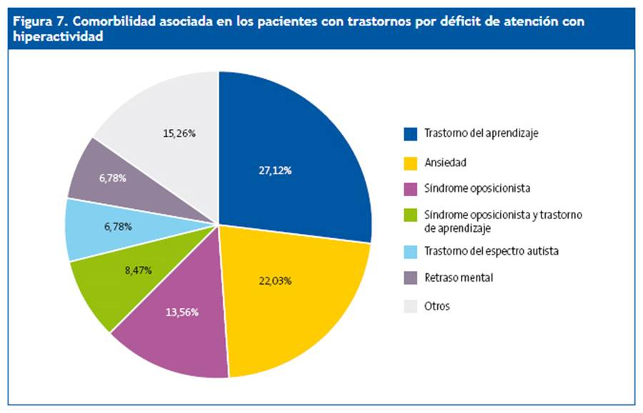

Estadisticas a nivel global
Segun la Organizacion Mundial de la Salud (OMS), en algunos paises la tasa de TDAH es:
En Europa, se calcula aproximadamente que 5% de ninños y adolescentes estan diagnosticados con TDAH
En Mexico, se estima que un millon de niños son afectados por TDAH
En los Estados Unidos, el 1% de ninños ha sido diagnosticado con TDAH
